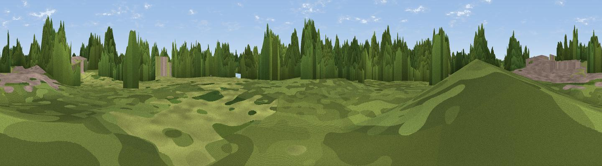

Viewpoint near Wanlip
#45020 in England · top 97% of its area beats it · near WanlipThe view, rendered

A 360° render of this exact spot computed from the terrain model, tree cover and land cover — summer colours, afternoon light, calibrated against photographs of famous viewpoints. Real trees, hedges and buildings will differ in detail.
The panorama
Grey silhouette: terrain skyline in each direction (720 bearings, Earth curvature and refraction included). Dashed green: skyline with trees (+15 m) and buildings (+8 m) as obstacles. Blue strip: how far the ground is visible on each bearing.
Where the view opens
Wedge length = distance to the farthest visible ground on that bearing (vegetation-aware). Rings at 10, 25 and 50 km.
What fills the view
45% woodland · 27% grassland · 17% built-up · 8% cropland · 3% water
Angular shares of the visible panorama (visual magnitude), not map area. Landscape diversity 0.58 (0–1 Shannon).
Key numbers
More beautiful places nearby
The staircase of upgrades: each row has a higher view potential than everything closer. Driving times are estimates from straight-line distance, calibrated against real road routing — check an actual route before setting out.
| Place | Direction | Drive | Score |
|---|---|---|---|
| Viewpoint near Mountsorrel | NW · 4 km | ~10 min | 45.7 |
| Viewpoint near Mountsorrel | NW · 5 km | ~10 min | 56.0 |
| Old John | W · 8 km | ~16 min | 70.3 |
| Broombriggs Hill | WNW · 9 km | ~18 min | 74.4 |
| Viewpoint near Woodhouse Eaves | WNW · 10 km | ~19 min | 77.7 |
| Viewpoint near Mow Cop | WNW · 88 km | ~112 min | 80.2 |
| Viewpoint near Elmley Castle | SW · 95 km | ~120 min | 80.5 |
| Bredon Hill | SW · 96 km | ~121 min | 83.0 |
52.69655, -1.10578 · source: osm viewpoint · position refined by local search. Computed location — check access rights before visiting.